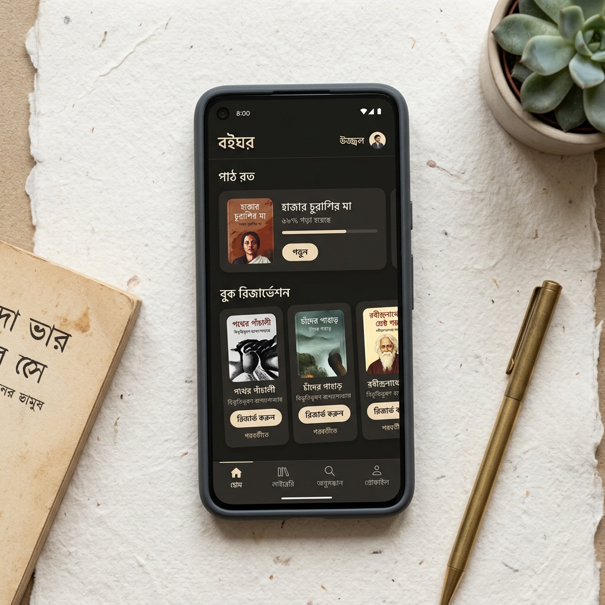

05 — SELECTED CASE STUDY
·
MOBILE PRODUCT DESIGN
Boighor: Digital Books & Audiobook Reader Mobile App
Designing a distraction-free mobile reading and audio listening experience emphasizing typographic legibility, intuitive scrubber ergonomics, and seamless offline library synchronization.

Boighor Reader & Audio Player — Custom Font Scaling, Fluid Sleep Timer Scrubber, and Reading Progress Insights
SHIPPED MOBILE PRODUCT
01 — Reader Experience
A serene digital sanctuary for avid book lovers.
We stripped away intrusive banner ads and cluttered social feeds, creating an uninterrupted reading canvas with bespoke typographic spacing and haptic-enhanced page turning.
FEATURE A
TYPOGRAPHY
Adaptive E-Ink Reading Modes
- Warm sepia, pure dark OLED, and natural paper lighting themes for eye strain prevention.
- Custom Bengali and English serif fonts tuned specifically for mobile pixel density.
- Dynamic line-height, kerning, and margin customization controls with live preview.
FEATURE B
AUDIO PLAYER
Integrated Audiobook Player
- Seamless whisper-sync switching between reading the e-book text and listening to audio narration.
- Haptic-assisted circular scrub dial for precise chapter rewinding and bookmarking.
- Smart sleep timer fading audio gently as the listener drifts off to sleep.
02 — App Metrics
Loved by over 100,000 active book readers.
100k+
Downloads
Across Google Play & Apple App Store
42m
Avg. Session Time
High engagement driven by distraction-free reading
4.7★
Store Rating
Consistently praised for typographic readability
95%
Offline Reliability
Zero-friction chapter downloads and sync